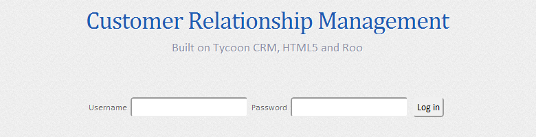
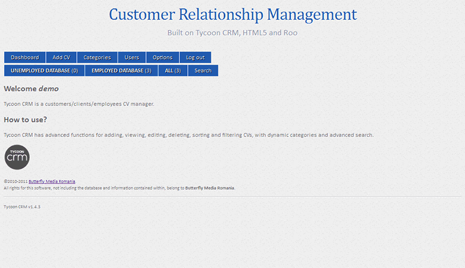
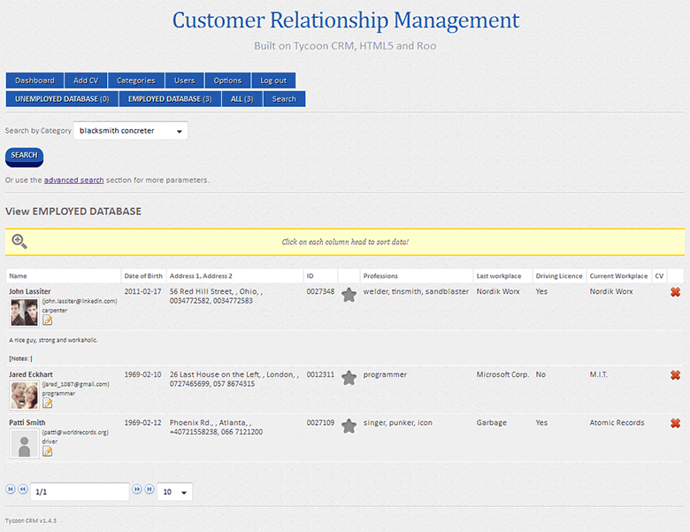
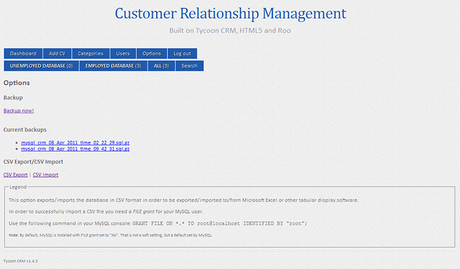
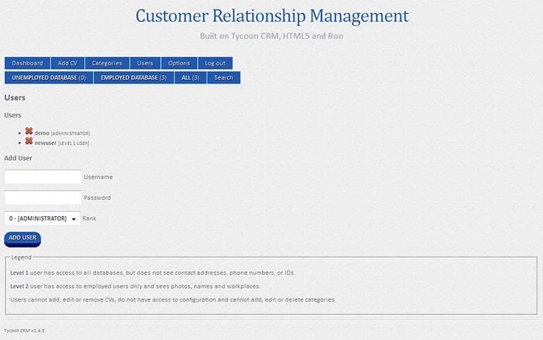

Version 1.4.3

Tycoon CRM is a customers/clients/employees CV manager written in PHP/MySQL. It is entirely browser-based, multi-user and multi-language.
Tycoon CRM is meant to be used by a group of people sharing the same database, and diferrent access levels, based on user and password.
Level 1 user has access to all databases, but does not see contact addresses, phone numbers, or IDs.
Level 2 user has access to employed users only and sees photos, names and workplaces.
Users cannot add, edit or remove CVs, do not have access to configuration and cannot add, edit or delete categories.

Tycoon CRM has advanced functions for adding, viewing, editing, deleting, sorting and filtering CVs, with dynamic categories and advanced search. It also features, pagination, rows per page, quick previous/next, first/last links.

Tycoon CRM can backup SQL data in one click using the built-in backup module. All previous backups can be downloaded and/or sent via email.
Backup email addresses can be set in includes/config.php in backup settings section.

Configuration panels (Users and Options) allow the user to add more user to the database with various access levels. All levels are documented regarding their amount of information.

Data (CVs) can be exported to CSV, ready for import into Microsoft Office or any other tabular display software.
In order to successfully import a CSV file you need a FILE grant for your MySQL user.
Use the following command in your MySQL console: GRANT FILE ON *.* TO root@localhost IDENTIFIED BY "root";
Note: By default, MySQL is installed with FILE grant set to "No". That is not a soft setting, but a default set by MySQL.
Tycoon CRM has been tested in Microsoft Internet Explorer, Mozilla Firefox, Google Chrome and Safari and works fine. However, we do not recommend using Microsoft Internet Explorer.
Server requirements for Tycoon CRM are:
Tycoon CRM gets updated by overwriting the files. No information is lost, as all data is kept in the database. If a future version requires database changes, it will prompt you to start an upgrade wizard. Any future versions will have a docs/upgrade.html file with detailed information.
Read the changelog here (text version).